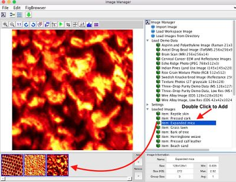

Cat img gui
Description
The image concatenation GUI can be used to join images in spatial dimensions or variable dimensions. It's important to consider carefully which domain, spatial or variable, you wish to concatenate in. The spatial domain is unfolded into a single mode (dimension) when analyzed and then folded, when appropriate, for display. The variable domain is always unfolded.
NOTE: When dealing with irregular/mismatched image sizes, remaining area will be marked as NaN and excluded (in the composite DSO). See further explanation here.
Opening the Window
After adding images to the current group (by double clicking the icon in Loaded Images area) use the Concatenate Current Group button to open the window. 

Image Domain
The image domain buttons provide concatenation in:
- X dimension (mode 2) latterly.
- Y dimension (mode 1) vertically.
- Z dimension (mode 3) as slabs.
- Tiled as m x m tiled squares (modes 1 and 2).
Variable Domain
The variable domain buttons provide concatenation in:
- Existing dimension (mode) where a list box will appear to select a mode if more than one exists.
- New dimension (mode).
Examples
Build a Single Multivariate Image from Several Univariate Images
A common scenario for concatenating images is combining several univariate images into a single multivariate image. The key to constructing this dataset object is understanding that the 3rd mode (dimension) of our data cube is the variable dimension.
- Load your images into the Image Manager and add them to current group (double-click the image in the tree to add it to the group or right-click in the group area and select Add All Images To Group). NOTE: You can place all of your images in a single folder and click the Load Images from Directory button (or via the File menu) to do this from files.
- Click the Concatenate Current Group button and use Variable mode being sure to concatenate variables in the "existing mode" direction as indicated below (the button on the left):
- The group of images should now be combined into a single image available in the Image Manager tree. You can now select the image and export it to Analysis, for example, for model building.
Building a Tiled Image
Another common use-case for concatenating images is creating a composite "tiled" image. In the example below we'll start with 3 images from the textures demonstration dataset (included with MIA_Toolbox) a tile them in a 2x2 composite image.
- Load the textures demo data by expanding the "Load Demo Data" leaf in Image Manager and then clicking "27 Texture Photos".
- Add 3 images to the current group by double-clicking on any three of the demo images in the tree.
- Click the Concatenate Current Group button and use Image mode (the default) and select 4th button "Tile" as shown below:
- You should end up with an image similar to the following ready to be exported to Analysis: